Exposición colectiva
01.11.2023 - 01.03.2024
Curaduría: Juan Echeverría y Andres Jacome)
M27: formas de matar arquetipos identitarios a través de la tecnología como arma que limpia y reconstruye la memoria de nuevas generaciones.
La palabra M27 representa uno de los modelos de revólver más utilizados en el sicariato colombiano. ESC retoma este concepto no como un acto violento, sino como una reflexión que alude a acciones de renuncia hacia una identidad geopolítica. Este término no tiene una definición establecida en el léxico común; es un supuesto ficticio que plantea la "muerte digital" de una identidad colectiva delimitada por una región específica: Colombia. Este proyecto busca de manera irónica acabar con estereotipos locales y así recrear una nueva imagen dentro de un espectro global en el arte digital. Esta exposición presenta diferentes conceptos que componen una interpretación especulativa de distintas formas para recodificar y autodefinir una supuesta identidad colombiana.
La crítica autónoma individual se va formando a través de una relación recursiva y tercermundista con la tecnología. El amplio acceso a diferentes medios offline y online, como cámaras digitales, smartphones, computadoras, sistemas de videojuegos, redes sociales y plataformas de interconexión, ha generado una visión cerebral más espacial y tridimensional de la forma en que nos comunicamos con los demás y cómo conectamos las ideas locales con otras ideas globales para expresar emociones, pensamientos e inconformidades. Los artistas Camilo Acosta (Huntertexas), Camila Arévalo y Juan David Figueroa retratan este concepto al contemplar un amplio espectro de las formas de acceso a la información desde el tercer mundo, indagando en la manera en que nos globalizamos desde el sur. Sus obras ilustran a una generación milenial afectada por temas como la depresión, el suicidio, la soledad, el cuestionamiento social hacia los roles de género y la relación con la naturaleza, afectada por la virtualidad.
Las nociones tradicionales de territorialidad y pertenencia buscan explorar cómo la tecnología y la virtualidad han transformado nuestras concepciones del espacio y su relación con la identidad. El "no territorio" se convierte en un concepto subversivo que desdibuja los límites geográficos y culturales, permitiendo una apertura a nuevas formas de expresión y conexión. De esta forma, Carlos Serrano, José Miguel Mejía, Julián Guzmán y NEA Gonorrea x Trvshologram buscan explorar en sus obras la hibridación humano-espacio, la deslocalización y la diáspora digital, desafiando las narrativas estáticas y proponiendo una visión más fluida y plural de la identidad colombiana in situ. A través de la intersección entre lo virtual y lo físico, este ideal de No-territorio invita a cuestionar cómo concebimos y experimentamos nuevas identidades en la era digital, desafiando las limitaciones impuestas por el espacio y abriendo posibilidades para la liberación geopolítica.
La individualidad colectiva colombiana se basa en una herencia cultural. El legado, como materia presente en las obras de Mario González, Namz Anil, Nicole Ávila y Sergio Cortez (Aeondelit), plantea conexiones entre el pasado y el presente, la tradición y la vanguardia. A su vez, cuestiona cómo la iconografía local se entrelaza con las nuevas tecnologías y expresiones contemporáneas. Este discurso busca romper los estereotipos y las narrativas populares, abriendo paso a una comprensión más compleja y rica de la identidad tercermundista globalizada. Plantea un medio para reflexionar profundamente sobre la transformación y la continuidad, desafiando y redefiniendo las nociones preexistentes en la era digital colombiana.
Este pabellón presenta una selección de artistas colombianos con el propósito de explorar las nociones de territorio, identidad y tradición para redefinir una identidad en el contexto global del sur. Este proyecto se puede definir como un ensayo visual lleno de anarquía y capricho, concebido para imaginar un escenario distópico que desafía las concepciones de una identidad colectiva en Colombia.
